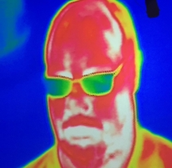

Tony Rossi
Tony Rossi He’s definitely one of my top two favorite parents!
Hi! Today (January 16, 2019) is my father’s 60th birthday. This is a website to celebrate his life so far. However, a true celebration of his life wouldn’t be complete without making a ton of bad jokes, since that’s a lot of what he’s done so far, so that’s mostly what I’ll be doing here.
He’s this guy

My dad is a pretty cool guy; Don’t just take it from me!
Tony Rossi
He’s definitely one of my top two favorite parents!
Elon Musk
10/10 would send to Mars at a greatly reduced cost
Lin-Manuel Miranda
I wanted to write a play about a great American hero whose life can be an inspiration to us all, but he humbly declined, so I had to go with Alexander Hamilton instead
Mitch McConnell
None of these people really said any of these things! Wait, I never said that sentence either! Or that! Aaaaaah!
“My father’s name is Thomas Rossi, but almost everyone calls him "Ross” (not me, though; I generally just call him “Dad”). You’d think that this would confuse people, as they’d think his name was “Ross Rossi”, and…you’d be right. This has happened a lot.
My dad is originally from the Philadelphia area, which is known for things like cheesesteaks, booing a drunk guy dressed as Santa, and having a large cracked bell. He definitely has strong opinions about cheesesteaks, which I’ve distilled into two basic rules:
As you may have noticed, the first rule is only enough to identify a Philly cheesesteak, and the second rule doesn’t help at all in identifying one. I’ve tried to get him to elaborate more so I can identify real Philly cheesesteaks myself, but from what I can tell, the last rule is just “it’s a real Philly cheesesteak if someone from Philly says it is”.
My dad is a very big Philadelphia sports fan! His favorite sport is baseball, and his favorite team is the Phillies. Unfortunately, Philadelphia isn’t known for having the most consistently successful sports teams. Earlier this week, after the Eagles lost in the playoffs, I sent him a text with my condolences, and he responded with this:
That’s some hard-core Philly shit right there.
This is honestly a pretty hard thing to answer. He says that he works in the field of “travel-demand forecasting”, which from googling is apparently a real thing that he didn’t make up. Wikipedia describes the field as the following:
Transportation forecasting is the attempt of estimating the number of vehicles or people that will use a specific transportation facility in the future. For instance, a forecast may estimate the number of vehicles on a planned road or bridge, the ridership on a railway line, the number of passengers visiting an airport, or the number of ships calling on a seaport. Traffic forecasting begins with the collection of data on current traffic. This traffic data is combined with other known data, such as population, employment, trip rates, travel costs, etc., to develop a traffic demand model for the current situation. Feeding it with predicted data for population, employment, etc. results in estimates of future traffic, typically estimated for each segment of the transportation infrastructure in question, e.g., for each roadway segment or railway station. The current technologies facilitate the access to dynamic data, big data, etc., providing the opportunity to develop new algorithms to improve greatly the predictability and accuracy of the current estimations.
Okay, that actually does sound pretty straightforward. Dad, in the future, just link people to Wikipedia.
Obviously I can’t distill everything about my dad in one webpage and I’ll need to stop somewhere, so here is as good a place as any. Dad, thanks so much for all the love and support over the years; here’s to another sixty (assuming that modern medicine improves at a fast enough pace to make that feasible)!
P.S. Sorry I didn’t think about this in time for your birthday, Mom. I’ll make one for you next year!